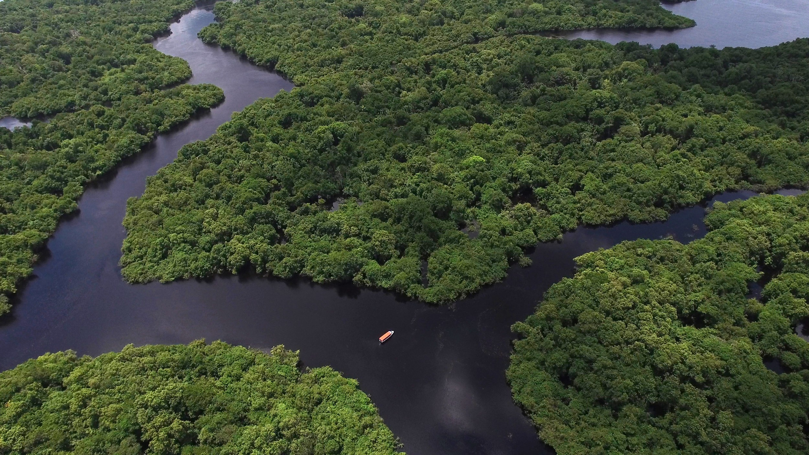

A ONG Verde Esperança se dedica à preservação ambiental por meio de ações práticas e educativas
Nossa missão é promover o equilíbrio entre desenvolvimento humano e sustentabilidade, sempre priorizando iniciativas que impactem diretamente as comunidades e a biodiversidade.
Missão: Preservar o meio ambiente através de ações comunitárias e educativas.
Visão: Um mundo onde o equilíbrio ambiental é prioridade.
Valores: Sustentabilidade, cooperação e responsabilidade.

Veja como nossas ações estão ajudando a proteger o planeta e as comunidades.